Create an extrude feature
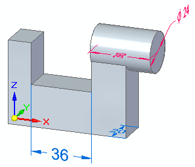
In the next few steps, you construct the extruded feature shown in the illustration.
Draw a circular sketch on a face of the model, and then use the Extrude command to construct the feature.
Also learn how to use the Keypoints options on the Extrude command bar to precisely control the extent of a feature relative to existing geometry.
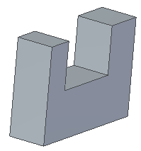
-
To make it easier to position the extruded feature, rotate the view so that the orientation is similar to the illustration.
Choose the Home tab→Sketch group→Circle by Center Point command .
Position the cursor over the planar face shown in the illustration and then click.
If necessary, press N until the bottom edge of the model face displays as shown below.
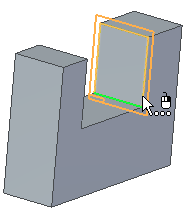
On the Circle by Center Point command bar, in the Diameter box, type 24, and then press Enter.
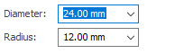
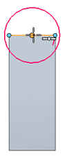
Notice that when defining the sketch plane, the sketch circle is attached to the cursor.
Position the cursor over the middle of the top edge, and when the midpoint relationship indicator displays adjacent to the cursor, click to place the circle.
On the Home tab→Close group, choose the Close Sketch command  .
.
Right-click to end the Circle command.
Click Cancel to cancel the Circle command.
Choose the Home tab→Dimension group→Smart Dimension command  .
.
Select the sketch circle just placed.
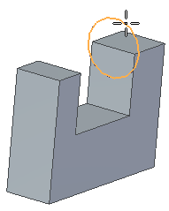
Position the cursor as shown, and then click to place the dimension.
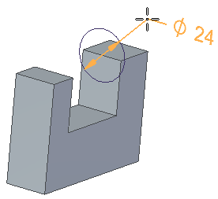
Press Esc to cancel the Smart Dimension command.
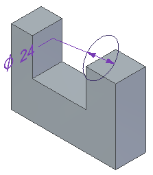
-
To rotate the view to an isometric view, press Ctrl+I.
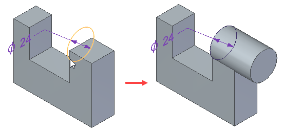
Use the Extrude command to construct another feature.
Choose the Home tab→Solids group→Extrude command  .
.
On the Extrude command bar, set the Add/Cut option to Add.
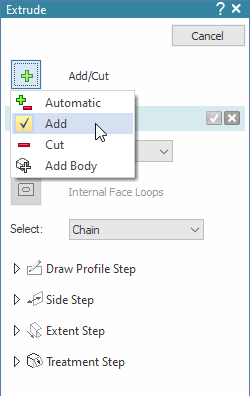
On the Extrude command bar, make sure the Select from Sketch option and the Single option are set.
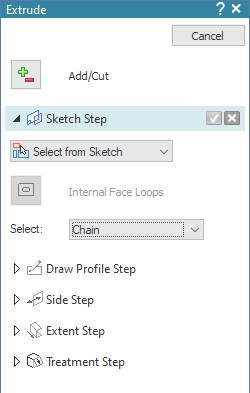
Highlight the sketch circle as the element you want to extrude, click, and then click Accept.
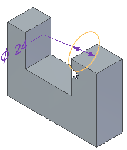
Make sure that the One-sided extent and Finite Extent options are selected.
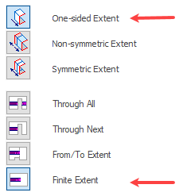
The extent distance moves dynamically with the cursor. On the command bar, in the 36 field, type 36 and press Enter.
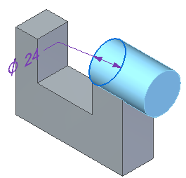
Move the cursor so the feature extends as shown below, and click.
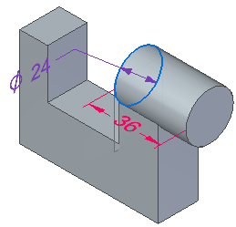
Right click to finish the extent and press Esc to dismiss the Extrude command.